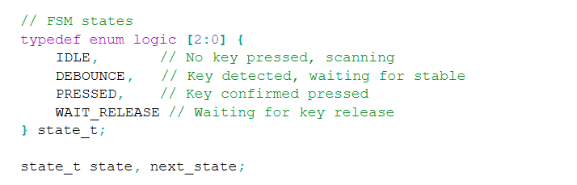
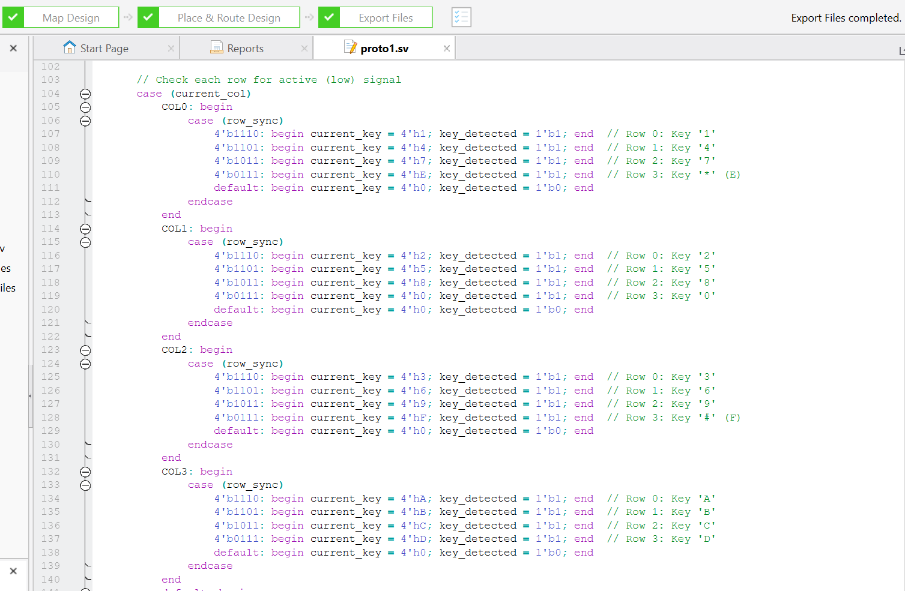
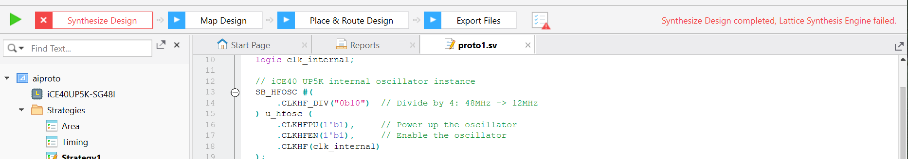

AI Prototypes for E155 Labs
AI Prototype Lab 1
The prompt that I provided the LLM was: “Write SystemVerilog HDL to leverage the internal high speed oscillator in the Lattice UP5K FPGA and blink an LED at 2 Hz. Take full advantage of SystemVerilog syntax, for example, using logic instead of wire and reg.”
In response, I received:
// Blink an LED at ~2 Hz using the iCE40UP5K internal HFOSC.
// Toolchains: Lattice Radiant/iCEcube2 or open-source (yosys/nextpnr-ice40).
module up5k_led_blink_2hz (
output logic led_o // drive your LED pin (active-high assumed)
);
logic clk_12mhz;
SB_HFOSC u_hfosc (
.CLKHFEN (1'b1), // enable output (assert after 100 µs PU time)
.CLKHFPU (1'b1), // power-up oscillator
.CLKHF (clk_12mhz)
);
localparam int unsigned F_CLK_HZ = 12_000_000;
localparam int unsigned F_BLINK_HZ = 2;
localparam int unsigned TICKS_PER_TOGGLE = F_CLK_HZ / (2 * F_BLINK_HZ);
localparam int COUNTER_W = $clog2(TICKS_PER_TOGGLE);
logic [COUNTER_W-1:0] tick_cnt /* synthesis preserve */;
always_ff @(posedge clk_12mhz) begin
if (tick_cnt == TICKS_PER_TOGGLE-1) begin
tick_cnt <= '0;
led_o <= ~led_o; // toggle at 2 Hz
end else begin
tick_cnt <= tick_cnt + 1;
end
end
initial led_o = 1'b0;
endmoduleWhen I attempted to synthesize this design, I thrown the error “instantiating unknown module SB_HFSOSC. VERI-1063”. I typed the error message back into the LLM, and it corrected itself by instantiating the module “SB_HFOSC”. The LLM had falsely named the Lattice iCE40/UP5K primitive of the on-board FPGA.
I would overall rate the quality of the output poorly. I used ChatGPT 5 for this task, and would have expected it to not make such a basic and obvious mistake. The prompt asked to produce a very simple design, so I found it surprising that the LLM’s output didn’t synthesize on the first try. I also found the mistake surprising, because there should be a correlation between “iCE40/UP5K” and “SB_HFOSC”, rather than “SB_HFSOSC” in the data that the chatbot used to create its answer.
Otherwise, the logic that the LLM created made sense, and the chatbot attempted to use local parameters and calculations to arrive at values necessary for the clock division. This makes the design modular.
AI Prototype Lab 2
The prompt that I provided the LLM was: “Write SystemVerilog HDL to time multiplex a single seven segment decoder (that decodes from four bits to a common anode seven segment display) to decode two sets of input bits and drive two sets of seven output bits.” In return, I recieved the following design that did not synthesize:
// Time Multiplexed Seven Segment Display Controller
// This module uses a single seven segment decoder to drive two displays
module seven_seg_mux (
input logic clk,
input logic reset_n,
input logic [3:0] digit0_in, // First 4-bit input
input logic [3:0] digit1_in, // Second 4-bit input
output logic [6:0] seg0_out, // Seven segment outputs for display 0
output logic [6:0] seg1_out, // Seven segment outputs for display 1
output logic digit0_enable, // Enable signal for display 0
output logic digit1_enable // Enable signal for display 1
);
// Internal signals
logic [3:0] mux_input;
logic [6:0] decoder_output;
logic mux_select;
logic slow_clk;
// Instantiate oscillator for timing
oscillator u_osc (
.clk(clk),
.reset_n(reset_n),
.slow_clk(slow_clk)
);
// Generate multiplexer select signal
always_ff @(posedge slow_clk or negedge reset_n) begin
if (!reset_n)
mux_select <= 1'b0;
else
mux_select <= ~mux_select;
end
// Input multiplexer
always_comb begin
case (mux_select)
1'b0: mux_input = digit0_in;
1'b1: mux_input = digit1_in;
endcase
end
// Instantiate seven segment decoder
seven_seg_decoder u_decoder (
.bin_in(mux_input),
.seg_out(decoder_output)
);
// Output demultiplexer and enable generation
always_comb begin
case (mux_select)
1'b0: begin
seg0_out = decoder_output;
seg1_out = 7'b1111111; // All segments off (common anode)
digit0_enable = 1'b0; // Active low enable
digit1_enable = 1'b1; // Disabled
end
1'b1: begin
seg0_out = 7'b1111111; // All segments off
seg1_out = decoder_output;
digit0_enable = 1'b1; // Disabled
digit1_enable = 1'b0; // Active low enable
end
endcase
end
endmodule
// Seven Segment Decoder Module
// Converts 4-bit binary input to seven segment display pattern
// Common anode configuration (active low outputs)
module seven_seg_decoder (
input logic [3:0] bin_in,
output logic [6:0] seg_out
);
// Segment mapping: seg_out = {g, f, e, d, c, b, a}
// Common anode: 0 = segment on, 1 = segment off
always_comb begin
case (bin_in)
4'h0: seg_out = 7'b1000000; // 0
4'h1: seg_out = 7'b1111001; // 1
4'h2: seg_out = 7'b0100100; // 2
4'h3: seg_out = 7'b0110000; // 3
4'h4: seg_out = 7'b0011001; // 4
4'h5: seg_out = 7'b0010010; // 5
4'h6: seg_out = 7'b0000010; // 6
4'h7: seg_out = 7'b1111000; // 7
4'h8: seg_out = 7'b0000000; // 8
4'h9: seg_out = 7'b0010000; // 9
4'hA: seg_out = 7'b0001000; // A
4'hB: seg_out = 7'b0000011; // b
4'hC: seg_out = 7'b1000110; // C
4'hD: seg_out = 7'b0100001; // d
4'hE: seg_out = 7'b0000110; // E
4'hF: seg_out = 7'b0001110; // F
endcase
end
endmodule
// Simple Oscillator Module
// Generates a slower clock for multiplexing
module oscillator (
input logic clk,
input logic reset_n,
output logic slow_clk
);
parameter DIVIDE_BY = 100000; // Adjust for desired refresh rate
logic [$clog2(DIVIDE_BY)-1:0] counter;
always_ff @(posedge clk or negedge reset_n) begin
if (!reset_n) begin
counter <= '0;
slow_clk <= 1'b0;
end else begin
if (counter == DIVIDE_BY - 1) begin
counter <= '0;
slow_clk <= ~slow_clk;
end else begin
counter <= counter + 1;
end
end
end
endmodule
// Testbench for verification
module seven_seg_mux_tb;
logic clk;
logic reset_n;
logic [3:0] digit0_in;
logic [3:0] digit1_in;
logic [6:0] seg0_out;
logic [6:0] seg1_out;
logic digit0_enable;
logic digit1_enable;
// Instantiate DUT
seven_seg_mux dut (
.clk(clk),
.reset_n(reset_n),
.digit0_in(digit0_in),
.digit1_in(digit1_in),
.seg0_out(seg0_out),
.seg1_out(seg1_out),
.digit0_enable(digit0_enable),
.digit1_enable(digit1_enable)
);
// Clock generation
initial begin
clk = 0;
forever #5 clk = ~clk;
end
// Test stimulus
initial begin
reset_n = 0;
digit0_in = 4'h0;
digit1_in = 4'h0;
#100 reset_n = 1;
// Test different digit combinations
#1000 digit0_in = 4'h3; digit1_in = 4'h7;
#2000 digit0_in = 4'hA; digit1_in = 4'hF;
#2000 digit0_in = 4'h5; digit1_in = 4'h2;
#5000 $finish;
end
// Monitor outputs
initial begin
$monitor("Time=%0t, digit0_in=%h, digit1_in=%h, seg0=%b, seg1=%b, en0=%b, en1=%b",
$time, digit0_in, digit1_in, seg0_out, seg1_out, digit0_enable, digit1_enable);
end
endmoduleNext, I asked the LLM to: “Write SystemVerilog HDL to time multiplex a single seven segment decoder (that decodes from four bits to a common anode seven segment display) to decode two sets of input bits and drive two sets of seven output bits. Use the seven segment decoder and oscillator provided in the attached files.” and attached my Lab 1 files. I received the following design that, again, did not synthesize.
// Isabella Hottenrott's segments module
// segments.sv
// Module containing Verilog code for Seven-segment display mapping
module segments(input logic [3:0] digit,
output logic [6:0] segs);
always_comb
case(digit)
0: segs = 7'b000_0001; //0
1: segs = 7'b100_1111; //1
2: segs = 7'b001_0010; //2
3: segs = 7'b000_0110; //3
4: segs = 7'b100_1100; //4
5: segs = 7'b010_0100; //5
6: segs = 7'b010_0000; //6
7: segs = 7'b000_1111; //7
8: segs = 7'b000_0000; //8
9: segs = 7'b000_1100; // 9
10: segs = 7'b000_1000; //a
11: segs = 7'b110_0000; //b
12: segs = 7'b011_0001; //c
13: segs = 7'b100_0010; //d
14: segs = 7'b011_0000; //e
15: segs = 7'b011_1000; //f
default: segs = 7'b111_1111;
endcase
endmodule
// Simple oscillator module for timing control
module oscillator(input logic clk,
input logic reset,
output logic slow_clk);
parameter DIVIDE_RATIO = 50000; // Adjust for desired refresh rate
logic [$clog2(DIVIDE_RATIO)-1:0] counter;
always_ff @(posedge clk or posedge reset) begin
if (reset) begin
counter <= 0;
slow_clk <= 0;
end else begin
if (counter == DIVIDE_RATIO - 1) begin
counter <= 0;
slow_clk <= ~slow_clk;
end else begin
counter <= counter + 1;
end
end
end
endmodule
module seven_seg_time_mux(
input logic clk,
input logic reset,
input logic [3:0] digit0, // First 4-bit input
input logic [3:0] digit1, // Second 4-bit input
output logic [6:0] segs0, // Seven segment outputs for display 0
output logic [6:0] segs1 // Seven segment outputs for display 1
);
// Internal signals
logic [3:0] mux_digit; // Multiplexed input to decoder
logic [6:0] decoder_segs; // Output from segments decoder
logic mux_select; // Select signal for multiplexing
logic slow_clk; // Slower clock for multiplexing
// Instantiate oscillator for timing control
oscillator timing_gen (
.clk(clk),
.reset(reset),
.slow_clk(slow_clk)
);
// Generate multiplexer select signal (toggles between displays)
always_ff @(posedge slow_clk or posedge reset) begin
if (reset)
mux_select <= 1'b0;
else
mux_select <= ~mux_select;
end
// Input multiplexer - select which digit to decode
always_comb begin
case (mux_select)
1'b0: mux_digit = digit0;
1'b1: mux_digit = digit1;
default: mux_digit = digit0;
endcase
end
// Instantiate Isabella's segments decoder
segments decoder (
.digit(mux_digit),
.segs(decoder_segs)
);
// Output demultiplexer - route decoder output to appropriate display
// When a display is not selected, turn off all segments (common anode = all high)
always_comb begin
case (mux_select)
1'b0: begin
segs0 = decoder_segs; // Display digit0
segs1 = 7'b111_1111; // Turn off display 1
end
1'b1: begin
segs0 = 7'b111_1111; // Turn off display 0
segs1 = decoder_segs; // Display digit1
end
default: begin
segs0 = 7'b111_1111;
segs1 = 7'b111_1111;
end
endcase
endendmodule
logic clk;
logic reset;
logic [3:0] digit0;
logic [3:0] digit1;
logic [6:0] segs0;
logic [6:0] segs1;
// Instantiate the Device Under Test (DUT)
seven_seg_time_mux dut (
.clk(clk),
.reset(reset),
.digit0(digit0),
.digit1(digit1),
.segs0(segs0),
.segs1(segs1)
);
// Clock generation (50MHz system clock)
initial begin
clk = 0;
forever #10 clk = ~clk; // 20ns period = 50MHz
end
// Test stimulus
initial begin
// Initialize signals
reset = 1;
digit0 = 4'h0;
digit1 = 4'h0;
// Release reset
#100 reset = 0;
// Test case 1: Display 3 and 7
#1000 digit0 = 4'h3; digit1 = 4'h7;
// Test case 2: Display A and F (hex)
#5000 digit0 = 4'hA; digit1 = 4'hF;
// Test case 3: Display 5 and 2
#5000 digit0 = 4'h5; digit1 = 4'h2;
// Test case 4: Display 8 and 1
#5000 digit0 = 4'h8; digit1 = 4'h1;
// Finish simulation
#10000 $finish;
end
// Monitor key signals
initial begin
$monitor("Time=%0t, digit0=%h, digit1=%h, segs0=%b, segs1=%b",
$time, digit0, digit1, segs0, segs1);
end
// Generate VCD file for waveform viewing
initial begin
$dumpfile("seven_seg_mux.vcd");
$dumpvars(0, seven_seg_time_mux_tb);
endendmodule
Both designs ran into the issue that the “loop count limit [of the clock] exceeded forever never breaks”. This occured because both LLM outputs created associated testbenches. I tried to take out this forever statement, and make the clock tick similarly to my own testbenches. However, when I did this, I received a “Synthesize Design Completed, Lattice Synthesis Engine Failed” error.
AI Prototype Lab 3
The first prompt that I provided the LLM was a monolithic prompts:
"Target device: Lattice iCE40 UP5K FPGA with internal high-speed oscillator (~20 MHz).
Write synthesizable SystemVerilog to scan a 4x4 matrix keypad and display the last two hex keys pressed on a dual 7‑segment display. Implement:
A clock divider that derives a scan clock on the order of 100–200 Hz from the internal oscillator.
A keypad scanning controller that iterates one active‑low column at a time and samples active‑low rows, registering at most one key per press (debounce‑by‑design), ignoring additional presses while any key is held, and allowing a new registration only after release.
A top level that updates two hex digits (older and most recent) when a new key is registered and drives a time‑multiplexed two‑digit 7‑segment display without visible flicker and with balanced brightness.
Use idiomatic SystemVerilog (e.g., logic, always_ff, enumerated states for FSMs). Provide clean module boundaries and keep all state synchronous. Include brief comments explaining the design choices." In return, I recieved the following design linked here that synthesized. This verilog produced a design with four FSM states. The instantiation of these states can be seen below. There was no FSM module specifically, and state transitions were scattered throughout the module. 
Otherwise, the commented logic provided by the LLM followed a path that made sense. The encodings for the segments were correct.
Next, I prompted the LLM in a modular manner such that it would decompose FSMs. The first of these prompts was:
"Target device: Lattice iCE40 UP5K FPGA.
Overall Goal: Write SystemVerilog to scan a 4x4 matrix keypad and display the last two hex keys pressed on a dual 7 segment display.
Current Goal: Write a synthesizable SystemVerilog module that produces a one‑shot registration signal for the keypad system. Behavior:
When a key press is first detected, capture the current key code and assert a single‑cycle “new key” pulse.
While any key remains pressed, do not accept additional keys.
Only after keys are released should a subsequent press be recognized.
This should handle debouncing of the keys.
Implement as a small synchronous FSM with enumerated states and glitch‑free outputs. Keep names and interfaces reasonable; do not assume any hidden modules beyond what you define here."In return, I recieved the following design linked here that synthesized.
The second modular prompt was: “Target device: Lattice iCE40 UP5K FPGA.
Write a synthesizable SystemVerilog module that cycles through keypad columns (active‑low, one at a time) and samples rows (active‑low) to detect a single key at a time. Behavior:
Iterate columns at a suitable scan rate derived from the divided clock and sample rows.
When a key is detected, report a stable key code consistent with a standard 4x4 keypad layout and maintain it while the key remains pressed.
Provide a boolean signal indicating whether any key is currently pressed.
Use clean state encoding and synchronous logic; avoid combinational feedback and latches."In return, I recieved the following design linked here that synthesized.
The design decoded the columns and rows in a case statement, verbosely breaking down every column and row possibility. Immediately, the row and column combinations were converted into the hex value that was pressed.

The final of the modular prompts was: “Target device: Lattice iCE40 UP5K FPGA with internal oscillator as the root clock source.
Write a top‑level SystemVerilog module that instantiates the scanner and one‑shot modules, shifts the last two keys (older ← most recent; most recent ← new), and drives a multiplexed two‑digit seven‑segment display. Requirements:
Update the displayed digits only when a new key is registered.
Ensure equal apparent brightness and no visible flicker.
Keep all logic synthesizable and synchronous; use idiomatic SystemVerilog constructs.
Provide any small clock‑enable or divider logic you need. You can also assume that a sevenSegment module exists that takes a 4 bit input and outputs the 7 segments."In return, I recieved the following design linked here.

This was the first of the designs returned by the LLM that did not synthesize. Claude attempted to import the wrong High Frequency Oscillator, as shown in the image above.
AI Prototype Lab 4
I prompted the following LLM with the question:
What timers should I use on the STM32L432KC to generate frequencies ranging from 220Hz to 1kHz? What’s the best choice of timer if I want to easily connect it to a GPIO pin? What formulae are relevant, and what registers need to be set to configure them properly?
It responded:
TIM2 (32-bit general-purpose) — easiest and most flexible choice. It has multiple channel outputs you can route to GPIO pins (e.g., PA0/PA5/PA15 → TIM2_CH1 (AF1), PB3 → TIM2_CH2 (AF1), etc.). 
TIM1 / TIM15–17 (16-bit) — also fine for PWM; TIM1 is “advanced” (needs MOE bit set) but you don’t need advanced features for simple tones. Device includes 1× advanced, 2× GP16, 1× GP32 per datasheet. 
LPTIM1 / LPTIM2 (low-power timers) — great if you want the signal to keep running in Stop modes or be clocked from LSE/LSI, and they have an OUT pin you can map (e.g., PA4/PA8 → LPTIM2_OUT (AF14)). For simple “always-on” PWM they work well too. 
Best simple choice for GPIO: TIM2 — 32-bit (so huge range/resolution), plentiful pin options (AF1 on several pins), and zero “advanced timer” gotchas.Overall, the datasheet got the explicitly-mentioned functionalities of the onboard timer right. For the specific application, it was wrong in deciding that 32 bits would be necessary. It did not include configurations to the RCC that need to be made for the Timers. It also forgot to add anything about registers or calculations for the actual clock division. The LLM also pointed toward the low-power timers. This is not unreasonable, because it wasn’t given any information on how long the timers would be active vs idle. After providing the LLM with the Reference Manual, it reaffirmed the decision to use Timer 2. Overall, I think going through the reference manual on my own is still a better use of time than taking the LLM output and debugging. I was a bit surprised about this, because I feel that there is enough online documentation for the LLM to output a more detailed response.
AI Prototype Lab 5
I prompted ChatGPT5 with the following: “Write me interrupt handlers to interface with a quadrature encoder. I’m using the STM32L432KC, what pins should I connect the encoder to in order to allow it to easily trigger the interrupts?”
In response, it provided me with the following:
"// Globals
static volatile int32_t encoder_count = 0;
static volatile uint8_t prev_state = 0;
// Call this during init (after HAL_Init and clocks).
static void Encoder_EXTI_Init(void) {
__HAL_RCC_GPIOA_CLK_ENABLE();
gi.Mode = GPIO_MODE_IT_RISING_FALLING; // fire on both edges
gi.Pull = GPIO_PULLUP; // or GPIO_NOPULL if you have externals
gi.Speed = GPIO_SPEED_FREQ_LOW;
// Using PA0 (A) and PA1 (B). Change to whatever pins you chose.
gi.Pin = GPIO_PIN_0 | GPIO_PIN_1;
HAL_GPIO_Init(GPIOA, &gi);
// Read initial state
uint8_t a = HAL_GPIO_ReadPin(GPIOA, GPIO_PIN_0) ? 1 : 0;
uint8_t b = HAL_GPIO_ReadPin(GPIOA, GPIO_PIN_1) ? 1 : 0;
prev_state = (a << 1) | b;
// Enable EXTI lines NVIC (EXTI0 for PA0, EXTI1 for PA1)
HAL_NVIC_SetPriority(EXTI0_IRQn, 5, 0);
HAL_NVIC_EnableIRQ(EXTI0_IRQn);
HAL_NVIC_SetPriority(EXTI1_IRQn, 5, 0);
HAL_NVIC_EnableIRQ(EXTI1_IRQn);
}
// Returns +1, -1, or 0 based on transition
static inline int8_t quad_step(uint8_t prev, uint8_t next) {
// Index (prev<<2)|next, values: 0, +1, -1, etc.
static const int8_t lut[16] = {
0, +1, -1, 0,
-1, 0, 0, +1,
+1, 0, 0, -1,
0, -1, +1, 0
};
return lut[(prev << 2) | next];
}
static inline void Encoder_EXTI_Service(void) {
uint8_t a = HAL_GPIO_ReadPin(GPIOA, GPIO_PIN_0) ? 1 : 0;
uint8_t b = HAL_GPIO_ReadPin(GPIOA, GPIO_PIN_1) ? 1 : 0;
uint8_t next = (a << 1) | b;
int8_t d = quad_step(prev_state, next);
prev_state = next;
encoder_count += d;
}
// IRQs (CubeMX names)
void EXTI0_IRQHandler(void) {
HAL_GPIO_EXTI_IRQHandler(GPIO_PIN_0);
}
void EXTI1_IRQHandler(void) {
HAL_GPIO_EXTI_IRQHandler(GPIO_PIN_1);
}
void HAL_GPIO_EXTI_Callback(uint16_t GPIO_Pin) {
if (GPIO_Pin == GPIO_PIN_0 || GPIO_Pin == GPIO_PIN_1) {
Encoder_EXTI_Service();
}
}"This code did not compile. I pasted some of the errors in, and the chatpot responded that it forgot to add in the line:
"GPIO_InitTypeDef gi = {0};"
The definition of gi is necessary; without it, there is no valid gi object for the code to configure, so those member accesses would always fail. This addition still didnt compile.
The next issue was that the chatbot had not included the appropriate HAL GPIO header file. In order for both GPIO_InitTypeDef and the various HAL GPIO functions and macros (such as HAL_GPIO_Init, HAL_GPIO_ReadPin, and the GPIO_PIN_x definitions) to be recognized, the code needs an explicit include, for example:
"#include stm32l4xx_hal_gpio.h"I was a bit surprised by these omissions in the generated code, since they are fairly fundamental to getting a basic STM32 HAL example to compile. In hindsight, though, I suspect the chatbot simply assumed that I already had the standard STM32 HAL headers included elsewhere in my project and was only trying to illustrate the interrupt-handling and quadrature-decoding logic itself, rather than providing a completely drop-in, self-contained code snippet.
AI Prototype Lab 6
I asked Gemini the prompt: I’m making a web portal to interface with a temperature sensor. Create a HTML page that looks good and is intuitive to show the temperature, control an LED, and change the precision of the readout.
It responded:
<!DOCTYPE html>
<html lang="en">
<head>
<meta charset="UTF-8">
<meta name="viewport" content="width=device-width, initial-scale=1.0">
<title>Temperature Sensor Portal</title>
<style>
/* --- General Styling --- */
body {
font-family: 'Arial', sans-serif;
background-color: #f0f2f5;
display: flex;
justify-content: center;
align-items: flex-start;
min-height: 100vh;
margin: 0;
padding-top: 50px;
}
.container {
background-color: #ffffff;
padding: 30px;
border-radius: 12px;
box-shadow: 0 4px 12px rgba(0, 0, 0, 0.1);
width: 100%;
max-width: 400px;
text-align: center;
}
h1 {
color: #333;
margin-bottom: 30px;
font-size: 1.8em;
border-bottom: 2px solid #eee;
padding-bottom: 10px;
}
/* --- Temperature Display --- */
#temperature-display {
font-size: 4em;
font-weight: bold;
color: #d9534f; /* Warm color for temperature */
margin-bottom: 20px;
}
.unit {
font-size: 0.5em;
vertical-align: top;
display: inline-block;
margin-left: 5px;
}
/* --- Control Section --- */
.control-group {
margin-top: 25px;
padding: 15px;
border: 1px solid #ddd;
border-radius: 8px;
text-align: left;
}
.control-group h3 {
margin-top: 0;
color: #555;
font-size: 1.1em;
border-bottom: 1px solid #eee;
padding-bottom: 8px;
margin-bottom: 15px;
}
.control-item {
display: flex;
justify-content: space-between;
align-items: center;
margin-bottom: 15px;
}
.control-item:last-child {
margin-bottom: 0;
}
/* --- LED Control Button --- */
#led-button {
padding: 10px 20px;
border: none;
border-radius: 5px;
cursor: pointer;
font-weight: bold;
transition: background-color 0.3s, box-shadow 0.3s;
}
.led-on {
background-color: #5cb85c; /* Green */
color: white;
box-shadow: 0 2px 4px rgba(92, 184, 92, 0.4);
}
.led-off {
background-color: #f0ad4e; /* Orange */
color: white;
box-shadow: 0 2px 4px rgba(240, 173, 78, 0.4);
}
#led-button:hover {
opacity: 0.9;
}
/* --- Precision Control --- */
#precision-select {
padding: 8px;
border-radius: 5px;
border: 1px solid #ccc;
background-color: #f9f9f9;
}
</style>
</head>
<body>
<div class="container">
<h1>Web Sensor Interface</h1>
<div class="data-display">
<h2>Current Temperature</h2>
<div id="temperature-display">
24<span class="unit">.50°C</span>
</div>
</div>
<hr>
<div class="control-group">
<h3>Device Controls</h3>
<div class="control-item">
<span>**LED Status:**</span>
<button id="led-button" class="led-off">Turn ON</button>
</div>
<div class="control-item">
<span>**Readout Precision:**</span>
<select id="precision-select" onchange="updateTemperature(currentTemp)">
<option value="0">0 Decimal (25°C)</option>
<option value="1">1 Decimal (24.5°C)</option>
<option value="2" selected>2 Decimals (24.50°C)</option>
<option value="3">3 Decimals (24.500°C)</option>
</select>
</div>
</div>
</div>
<script>
// --- Global State ---
let isLedOn = false;
let currentTemp = 24.505; // Placeholder for the full temperature value
// --- DOM Elements ---
const tempDisplay = document.getElementById('temperature-display');
const ledButton = document.getElementById('led-button');
const precisionSelect = document.getElementById('precision-select');
// --- Functions ---
/**
* Toggles the LED state (simulated).
* In a real application, this would send an AJAX/Fetch request to your sensor's backend.
*/
function toggleLed() {
isLedOn = !isLedOn;
if (isLedOn) {
ledButton.textContent = 'Turn OFF';
ledButton.classList.remove('led-off');
ledButton.classList.add('led-on');
console.log("LED turned ON. (Simulated backend call)");
// Real code: fetch('/api/led/on');
} else {
ledButton.textContent = 'Turn ON';
ledButton.classList.remove('led-on');
ledButton.classList.add('led-off');
console.log("LED turned OFF. (Simulated backend call)");
// Real code: fetch('/api/led/off');
}
}
/**
* Updates the temperature display based on the selected precision.
* @param {number} temp - The raw temperature value.
*/
function updateTemperature(temp) {
const precision = parseInt(precisionSelect.value);
const parts = temp.toFixed(precision).split('.');
// Handle case where precision is 0 (no decimal part)
const integerPart = parts[0];
const decimalPart = parts.length > 1 ? '.' + parts[1] : '';
tempDisplay.innerHTML = `${integerPart}<span class="unit">${decimalPart}°C</span>`;
}
/**
* Simulates fetching new sensor data and updates the display.
* In a real application, this would run periodically via setInterval or WebSockets.
*/
function fetchNewTemperature() {
// In a real app, you'd use fetch:
// fetch('/api/temperature').then(res => res.json()).then(data => { currentTemp = data.temp; updateTemperature(currentTemp); });
// For this example, let's simulate a minor temp change:
currentTemp = 24.505 + (Math.random() - 0.5) / 10; // Small random fluctuation
updateTemperature(currentTemp);
}
// --- Event Listeners and Initial Setup ---
// 1. LED Button
ledButton.addEventListener('click', toggleLed);
// 2. Initial Temperature Display
updateTemperature(currentTemp);
// 3. Simulated Live Update (fetches new temp every 5 seconds)
setInterval(fetchNewTemperature, 5000); // Poll every 5 seconds (adjust as needed)
</script>
</body>
</html>Next, I asked: Write me a C function to carry out a SPI transaction to retrieve a temperature reading from a DS1722 sensor. Make use of CMSIS libraries for the STM32L432KC.
It responded:
#include "ds1722.h"
#include <stdint.h>
/**
* @brief Performs an SPI transaction to read the temperature from the DS1722 sensor.
* * The DS1722 expects a 1-byte read command (0x01) followed by 2 bytes of data
* which contain the 16-bit two's complement temperature value. The LSB is 1/128 °C.
* * @param None
* @return The temperature reading in degrees Celsius (float).
*/
float DS1722_ReadTemperature(void)
{
// The transaction requires 1 byte for the command (0x01) followed by 2 bytes
// of dummy data to clock out the 16-bit temperature from the sensor.
uint8_t tx_buffer[3] = {DS1722_CMD_READ_TEMP, 0xFF, 0xFF};
uint8_t rx_buffer[3] = {0};
int16_t raw_temperature = 0;
float temperature_celsius = 0.0f;
// 1. Activate Chip Select (CS low)
HAL_GPIO_WritePin(DS1722_CS_GPIO_PORT, DS1722_CS_PIN, GPIO_PIN_RESET);
// 2. Transmit the command byte and simultaneously receive the data bytes.
// The total transfer length is 3 bytes (Command + MSB Data + LSB Data).
HAL_StatusTypeDef status = HAL_SPI_TransmitReceive(
&DS1722_hspi,
tx_buffer,
rx_buffer,
3,
HAL_MAX_DELAY
);
// 3. Deactivate Chip Select (CS high)
HAL_GPIO_WritePin(DS1722_CS_GPIO_PORT, DS1722_CS_PIN, GPIO_PIN_SET);
// Check for successful transmission
if (status != HAL_OK)
{
// Handle error: return a distinct error value or log the issue
// For simplicity, we return a very low value.
return -999.0f;
}
/* * The temperature data is returned in rx_buffer[1] (MSB) and rx_buffer[2] (LSB).
* The MSB is received first.
* Raw data format: [S S S S S S S S | D D D D D D D D]
* MSB (rx_buffer[1]) holds the high 8 bits.
* LSB (rx_buffer[2]) holds the low 8 bits.
* The LSB is bit D7 (1/128 degree Celsius).
*/
// Combine the 2 received bytes into a 16-bit signed integer (Two's complement)
raw_temperature = (int16_t)((rx_buffer[1] << 8) | rx_buffer[2]);
// 4. Convert the raw two's complement value to Celsius.
// The resolution is 1/128 °C (0.0078125 °C) per LSB.
temperature_celsius = (float)raw_temperature / 128.0f;
return temperature_celsius;
}The HTML production was successful and impressive. However, the C code did the wrong temperature conversion, multiplying the LSB by 1/128 instead of 1/16. The C function it produced for reading from the DS1722 sensor looked structurally correct at first glance: it wrapped the SPI transaction properly, used the HAL/CMSIS conventions correctly, handled chip-select sequencing, and even included basic error handling. However, once I compared the code’s data interpretation logic with the DS1722 datasheet, it became clear that the chatbot had misrepresented a core part of the temperature conversion formula. This highlights a general trend when using LLMs for embedded development: they are quite good at scaffolding boilerplate structure and recalling common HAL usage patterns, but any sensor-specific constants, timing rules, or register interpretations still need to be verified against the manufacturer documentation.